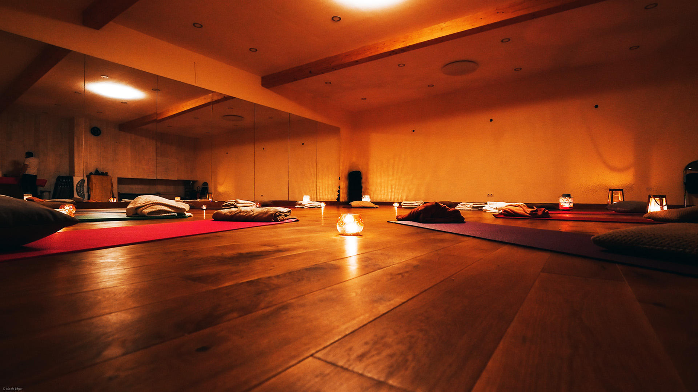
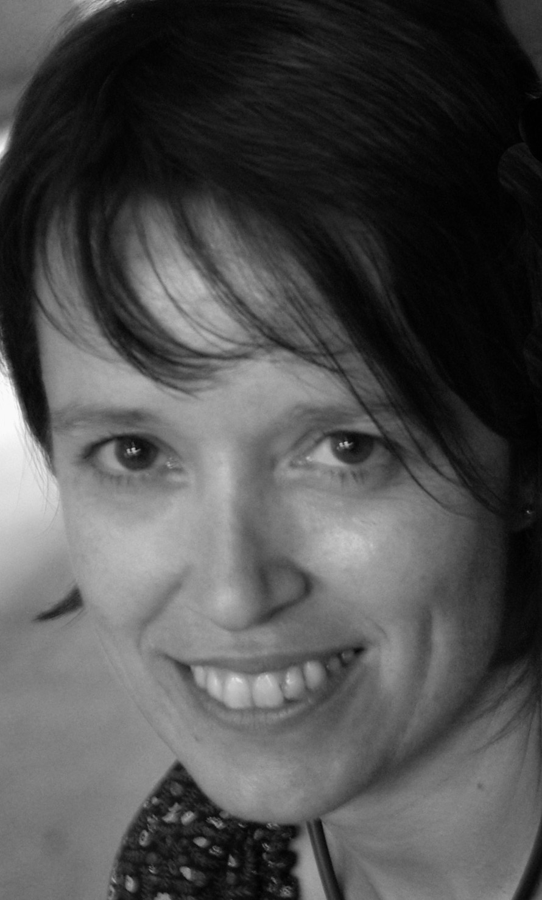

La pleine conscience (Mindfulness) est une pratique de méditation. Une attitude attentive
à tout ce qui se passe autour de soi, grâce à une meilleure connexion avec soi-même, les
autres et le monde.
Ce cycle MBSR (en anglais: Mindfulness Based Stress Reduction - réduction du stress basée
sur la pleine conscience) dure 8 semaines. Il est collectif et progressif. Il permet
d’entraîner son esprit à se concentrer sur le moment présent, sans jugement de valeur.
L’objectif de ce stage d’apprentissage, accessible à tous, est de se relier avec
bienveillance et curiosité à son vécu intérieur (émotions, sensations, pensées). Il vous
intéressera sans doute si vous souhaitez utiliser des nouveaux outils pour:
Prendre davantage soin de vous;
Accéder à la sérénité;
Améliorer votre relation aux autres;
Gérer au mieux vos situations de stress;
Faire face à l’anxiété et la souffrance.
À l'issue de cette expérience, vous serez capables:
De gérer les douleurs sans les subir;
De vivre pleinement l’instant présent;
D’accueillir les émotions avec plus de bienveillance;
D’identifier les sources de mal-être et d’y répondre, plutôt que d’y réagir;
D’utiliser des outils pour faire face aux souffrances physiques et psychiques.
Le cycle MBSR à Givet
Ce qui est proposé
Programme
Ce programme structuré, progressif et expérientiel (basé sur l'expérience personnelle) est
constitué de 8 séances de 2h30 chaque semaine et d'une journée de pratique intensive entre
la sixième et septième séance, de 10h à 17h (un samedi).
Au cours de ces séances, nous pratiquons la bienveillance et la curiosité, des pratiques
guidées formelles de Pleine Conscience, des étirements doux, des moments de réflexion et
d'échanges pour soutenir le cheminement de chacun, avec de brefs apports théoriques.
En dehors de ces séances, des méditations guidées et des exercices de Pleine Conscience
seront à intégrer dans sa vie, pour la pratique quotidienne à domicile. Un cahier complètera
ce programme avec quelques exercices.
Conditions de participation
Pour pouvoir participer, il est nécessaire de s'engager à :
Assister à l'entièreté du programme des 8 semaines;
Libérer 45 mn par jour pour pratiquer des exercices à domicile qui seront donnés de
semaine en semaine.
Dates
Un cycle est en cours pour le moment. Un autre cycle sera organisé prochainement (début 2022).
Pour être averti des
dates du prochain cycle, vous pouvez me laisser une demande
de contact.
Le programme aura lieu à l'Espace Quiétude, 6 quai de Meuse, 08600 GIVET:
tarifs
Comment rejoindre ce cycle
Votre inscription définitive sera validée après notre contact téléphonique. Celui-ci a
pour but de répondre à vos questions et de faire connaissance.
Si le coût est problématique pour vous, n’hésitez pas à m’en parler, nous trouverons une
solution.
Ce cycle bénéficie d’un remboursement partiel de la part de certaines mutualités belges.
Renseignez-vous auprès de la vôtre.

Cycle en présentiel
Programme de 8 semaines
2h30 par semaine en salle
1 journée intensive
45 minutes de méditations guidées et des
exercices de Pleine Conscience à intégrer dans son quotidien
De manière générale, nous vivons tous des situations de stress, avec des intensités
différentes, dans notre vie familiale, comme dans notre vie professionnelle. La vie
nous emporte dans un flot tourbillonnant qu'il est parfois difficile de ralentir
(famille, travail, démultiplication des sources de sollicitation et de distraction). Le
corps y réagit, comme il le peut, quand nous ne prenons pas la mesure de ces situations de
mal-être. Le programme de réduction de stress basé sur la Pleine Conscience a montré aussi
des bienfaits sur un grand nombre de symptômes et de maladies, comme les troubles du
sommeil, l'anxiété, les ruminations mentales, les douleurs chroniques, inflammatoires, les
difficultés à gérer nos émotions, le psoriasis, les dépressions, les problèmes
cardio-vasculaires.
La Pleine Conscience permet ainsi le développement d'une aptitude à être en
relation
différente avec l'expérience vécue.
Selon les circonstances, le mental et le corps peuvent aussi donner l'impression
de
passer
par des phases. Les changements de conditions peuvent provoquer ou réduire
certaines
pressions. Ils peuvent augmenter ou diminuer la température sur le plan
émotionnel,
cognitif, somatique (relatif au corps physique) ou spirituel. Nous appelons ces
changements
qui exigent de notre part une forme quelconque d'adaptation des « facteurs de
stress
»,
et
nous appelons notre expérience de ces changements, en particulier si nous n'y
répondons
pas
de manière adaptée, le « stress ».
Cette pratique permet, entre autres, de passer du mode "être" au mode "faire", ceci afin
d'assimiler toutes les informations que nous offre l'expérience, avant d'agir ou de
réagir à une situation de stress.
Cette sorte d'attention nourrit une prise de conscience plus fine, une plus
grande clarté d'esprit et l'acceptation de la réalité que nous vivons d'instant en
instant. Elle est un moyen simple mais efficace pour se débloquer, pour prendre
contact
avec
nos propres ressources vitales, pour cultiver notre rapport avec la famille, avec la
vie
professionnelle, avec le monde et, surtout, avec nous-même
Comment tendre vers cette ouverture, cette bienveillance envers soi, envers les
autres?
Participer à un cycle MBSR permet de faire l'expérience d'une pratique régulière de pleine
conscience qui peut favoriser notre capacité à être en lien avec soi. À se
familiariser avec une nouvelle attitude à l'égard des pensées, des émotions, des sensations
corporelles et à nos tendances à réagir. à percevoir les pensées comme des événements
mentaux, qui ne sont pas à prendre comme des événements réels, mais simplement comme des
phénomènes passagers. À augmenter nos capacités de concentration et de mémoire. À
apprivoiser les émotions dites négatives (stress, impulsivité, anxiété…). Cette pratique
régulière permet d'être acteur de sa vie et de faire ce que nul autre que vous peut faire à
votre place: aborder de manière consciente les difficultés ou les souffrances qui peuvent se
présenter dans le quotidien et pouvoir les apaiser.
Cultiver notre présence ouverte et bienveillante peut nous aider à aborder chaque
instant
avec une vision et un ressenti neufs qui stimulent l'apprentissage, la croissance,
la
guérison et la transformation, tout au long de la vie.
Un peu d'histoire
Cette pratique de méditation contemplative, de plus de 2000 ans, nous vient de la
tradition
bouddhiste que Jon Kabat-Zinn a adaptée (sans les valeurs religieuses) dans la médecine
et
les soins de santé, par le biais de la MBSR, ou réduction du stress basée sur la pleine
conscience, à la Clinique de Réduction du Stress du Centre Médical de l'Université du
Massachusetts en 1979. Cette pratique intensive à la pleine conscience a été mise au
point,
au départ, pour compléter des traitement médicaux des patients, en proposant un
protocole
précis. Celui-ci a également été proposé pour répondre au stress des soignants.
Depuis une vingtaine d'années, la réduction du stress basée sur la pleine conscience est
proposée dans différents secteurs professionnels comme l'éducation (enseignants et
élèves/étudiants), les entreprises (management, bien-être au travail…) et l'action
sociale
(auprès des populations en grande fragilité et/ou des intervenants sociaux…). Ils sont
tous
soumis à différents facteurs de stress. Des cycles MBSR sont aussi proposés à un public
plus
large souhaitant développer ses ressources personnelles en se libérant des mécanismes
automatiques, source de mal-être ou de détresse psychologique.
La pleine conscience (Mindfulness) est en état de conscience qui résulte du fait de
porter son attention, intentionnellement, au moment présent, sans juger, sur
l'expérience qui se déploie instant après instant.
La Pleine Conscience s'entraîne par la méditation formelle et des pratiques informelles.
La pleine conscience n'implique pas d'être plus attentif mais de l'être
différemment,
avec plus de sagesse - de tout son esprit et de tout son coeur, en utilisant
l'ensemble
des ressources qui sont celles du corps et des sens.
À propos de moi
Qui suis-je?
Je m'appelle Laurence et je travaille dans un service d'urgence depuis plus de 10
ans, auprès d'enfants et d'adolescentes.
J'ai découvert la méditation en 2014. Elle a suscité une curiosité et un
intérêt parce qu'elle offre la possibilité de développer ses propres ressources,
d'agir
sur
sa propre vie, d'avoir une relation différente avec les expériences vécues avec
bienveillance. Elle agit aussi sur notre capacité à être en lien avec les autres.
Après avoir participé à un cycle MBSR, puis des approfondissements et des
retraites, je me suis tournée naturellement vers une formation qui me permette de
transmettre cette pratique. J’ai finalisé cette formation à l’université de
Bruxelles en
2018 où j’ai obtenu le certificat Universitaire de pleine conscience-Mindfulness. Je
suis
membre de ABFM (Association Belge Francophone de la Pleine Conscience-Mindfulness).

CONTACT
N'hésitez pas à me contacter pour plus d'informations